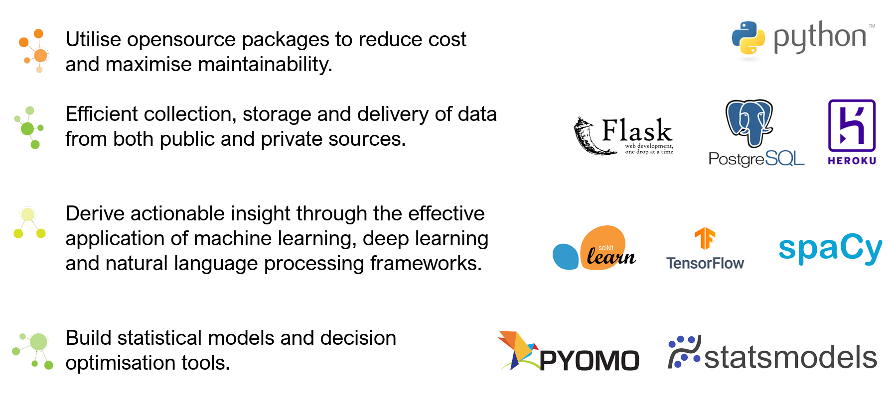

We are busy building the chat forum and will let you know as soon as it is available
In the mean time I will share a few example projects i have been working on
The following slide highlights the key packages that we use to develop solutions
If you would like to find out more please get in touch here